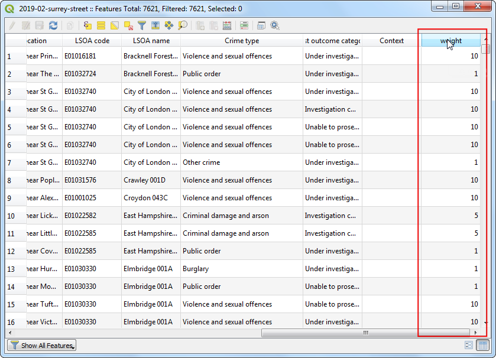

Ujaval Gandhi
Ujaval GandhiKreiranje toplotnih mapa (QGIS3)¶
Toplotne mape su jedan od najboljih alata za vizuelizaciju gustih tačkastih podataka. Toplotna mapa je tehnika interpolacije koja je korisna za određivanje gustine ulaznih karakteristika. Toplotne mape se najčešće koriste za vizuelizaciju podataka o kriminalu, saobraćajnim incidentima, gustini naseljenosti itd. QGIS ima renderer toplotnih mapa koji se može koristiti za stilizovanje tačkastog sloja i algoritam za obradu Toplotna mapa (procena gustine jezgra) koji se može koristiti za kreiranje rastera iz tačkastog sloja.
Pregled zadataka¶
Radićemo sa skupom podataka o lokacijama kriminala u Sariju, u Velikoj Britaniji, i kreirati toplotnu mapu za vizuelizaciju regiona sa visokom gustinom kriminala.
Druge veštine koje ćete naučiti¶
Korišćenje virtuelnih polja i uslovnih izraza
Dobijte podatke¶
data.police.uk pruža podatke o kriminalu na nivou ulice, ishodima, zaustavljanjima i pretragama u jednostavnom CSV formatu. Preuzmite podatke za Surrey Police i raspakujte preuzetu arhivu da biste izdvojili CSV datoteku.
Radi lakšeg snalaženja, možete direktno preuzeti kopiju skupa podataka sa linka ispod:
Izvor podataka [POLICEUK]
Procedura¶
Prvo ćemo učitati sloj osnovne mape iz OpenStreetMap-a, a zatim ćemo uvesti CSV podatke. U kartici Browser, skrolujte nadole i pronađite odeljak XYZ Tiles.

Proširite ga da biste videli sloj pločica OpenStreetMap. Prevucite ga i ispustite na glavno platno. Zatim ćemo učitati CSV datoteku. Kliknite na dugme Open Data Source Manager.

Pređite na karticu Razgraničeni tekst. Ovde ćemo uvesti podatke o zločinu koji se nalaze u tekstualnoj datoteci u CSV formatu. Kliknite na dugme … pored Ime datoteke i pregledajte preuzetu datoteku
2019-02-surrey-street.csv. Polja X i Y u odeljku Definicija geometrije treba automatski popuniti kolonamaGeografska dužinaiGeografska širina. Geometry CRS treba ostaviti na podrazumevanu definicijuEPSG:4326 - WGS 84. Uverite se da podaci izgledaju ispravno u panelu Uzorak podataka i kliknite na Dodaj, a zatim na Zatvori.

Videćete 2 sloja -
OpenStreetMapi2019-02-surrey-streetučitane u QGIS Layers panel. Kliknite desnim tasterom miša na sloj2019-02-surrey-streeti izaberite Zumiraj na sloj.

Videćete sloj sa tačkama incidenata kriminala preklopljen preko osnovne mape OpenStreetMap. Zumirajte i pomerite da biste istražili podatke. Podaci su prilično gusti i teško je steći predstavu o tome gde postoji velika koncentracija kriminala. Tu će vam vizuelizacija toplotne mape dobro doći. Izaberite sloj „2019-02-surrey-street“ i kliknite na dugme :guilabel:„Otvori panel za stilizovanje sloja“.

Izaberite „Heatmap“ kao renderer u meniju dropbox-a. Panel za stilizovanje sloja je interaktivan i možete odmah videti efekat vaših promena na platnu. Sloj će sada biti prikazan u podrazumevanoj skali boja sive boje.

Toplotna mapa se obično renderuje korišćenjem žuto-crvene ili belo-crvene skale boja, gde veća koncentracija tačaka rezultira većom toplotom. Kliknite na padajući meni Skala boja i izaberite Crvene` skalu boja.

Zatim treba da izaberete Radijus. Ovaj parametar određuje kružno okruženje oko svake tačke gde će ta tačka imati uticaj. Ova vrednost će u velikoj meri zavisiti od tipa vaših ulaznih podataka. Za naše podatke, pretpostavimo da će incident zločina imati uticaj do 5 kilometara od lokacije. Obratite pažnju da je trenutni CRS projekta podešen na
EPSG: 3857u donjem desnom uglu. Ovaj CRS ima jedinicu metar, tako da bi trebalo da navedemo5000metara kao radijus. Još jedan parametar koji je skriven iz ovog menija je Oblik jezgra. Ovo je funkcija koja određuje kako uticaj tačke treba da se rasporedi po datom radijusu. Renderer Heatmap koristi funkcijuQuarticza ovaj proračun. Postoje i druge vrste jezgara kao što su „Triangularna“, „Uniformna“, „Trivežinska“ i „Epanečnikova“ koja se mogu navesti kada se koristi drugačiji metod kreiranja toplotne mape opisan kasnije u ovom tutorijalu. Pogledajte ovaj post za dobro objašnjenje i smernice za izbor pravog radijusa i oblika jezgra.
Vizuelizacija toplotne mape je spremna. Možemo podesiti neprozirnost toplotne mape u odeljku Renderovanje slojeva na dnu. Podesite neprozirnost na
60 %tako da možete videti osnovnu mapu zajedno sa toplotnom mapom.

Za mnoge vrste analiza, dovoljno je samo razmatranje gustine tačaka. Ali ponekad ćete možda želeti da svakoj tački date različit značaj. Nasilniji zločin bi trebalo da ima veći uticaj na izlaznu mapu toplote nego pljačka. Slično tome, ponekad tačka može predstavljati višestruka zapažanja na jednoj lokaciji koja treba uzeti u obzir u analizi. Da biste to uradili, možete da navedete opciono numeričko polje težine koje određuje vrednost za svaku tačku. Dodajmo polje za težinu i koristimo ga za poboljšanje mape toplote. Kliknite desnim tasterom miša na sloj
2019-02-surrey-streeti izaberite Otvori tabelu atributa.
U ulaznim podacima videćete tekstualno polje pod nazivom „Vrsta zločina“ koje opisuje vrstu zločina. Možemo ih koristiti za kategorizaciju različitih vrsta zločina i dodeljivanje veće težine nasilnijim zločinima.
Kliknite na Otvori kalkulator polja

Sada ćemo uneti formulu koja koristi „tip zločina“ i određuje vrednost težine. QGIS ima praktičan način za dodavanje takvih izračunatih polja koristeći Virtuelna polja. Virtuelno polje se čuva u QGIS projektu i ne menja izvorne podatke. Takođe se dinamički izračunava i može se koristiti bilo gde u QGIS-u baš kao i bilo koja druga vrednost atributa. Unesite „težina“ kao Naziv izlaznog polja i postavite Tip izlaznog polja na
Ceo broj (ceo broj). Unesite sledeći izraz u Uređivač izraza. Ovde koristimo izraz CASE da bismo dodelili različite vrednosti na osnovu različitih uslova. Kliknite na OK.
CASE WHEN "Crime type" LIKE 'Violence%' THEN 10 WHEN "Crime type" LIKE 'Criminal%' THEN 5 ELSE 1 END
Za svaku karakteristiku biće dodat novi atribut sa odgovarajućom vrednošću težine.

Nazad u panelu Stilizovanje sloja, kliknite na padajući meni za Ponderisanje težine poena po i izaberite novododato polje
težina.
Videćete da se renderovanje toplotne mape menja kako bi se uzeo u obzir parametar težine. Zatvorite panel Stilizovanje sloja.

Ako vam je potrebno da vizuelizacija toplotne mape bude sačuvana kao trajni rasterski sloj ili želite da prilagodite toplotnu mapu naprednim opcijama kao što su različita jezgra ili dinamički radijus, možete koristiti Toplotnu mapu (Procena gustine jezgra) iz kutije sa alatkama za obradu. Sada ćemo koristiti ovaj algoritam. Idite na .

Pre nego što možemo da kreiramo toplotnu mapu, potrebno je da ponovo projektujemo izvorne podatke na projektovani CRS. Pošto udaljenost igra važnu ulogu u izračunavanju toplotne mape, nije ispravno koristiti geografski CRS. Pretražite i pronađite algoritam .

U dijalogu Reproject layer + Ponovo projektuj sloj, kliknite na dugme Select CRS - Izaberi CRS za Target CRS - Ciljni CRS. Potražite i izaberite
EPSG:27700 OSGB 1936 / British National GridCRS. Ovaj projektovani CRS je dobar izbor za podatke u Velikoj Britaniji. Kliknite na Run -Pokreni.

Novi sloj pod nazivom „Reprojected“ biće dodat na panel :guilabel:„Slojevi“. Opozovite izbor u polju pored starog sloja „2019-02-surrey-street“ da biste ga sakrili.

Pretražite i pronađite algoritam .

U dijalogu Heatmap (Kernel Density Estimation), koristićemo iste parametre kao i ranije. Izaberite Radius kao
5000metara i Weight from field kaoweight. Postavite Pixel size X i Pixel size Y na50metara. Neka Kernel shape bude na podrazumevanoj vrednostiQuartic. Kliknite na Run.

Белешка
Parametar Radijus od polja vam omogućava da odredite dinamički radijus pretrage za svaku tačku. Ovo se može koristiti zajedno sa Težina od polja da bi se dobila preciznija kontrola nad načinom na koji se uticaj svake tačke širi.
Kada se obrada završi, biće učitan novi rasterski sloj pod nazivom „OUTPUT“. Podrazumevana vizuelizacija je ružna jer koristi renderer „Singleband gray“. Kliknite na dugme :guilabel:„Otvori panel za stilizovanje sloja“.

Promenite renderovanje na „Singleband Pseudocolor“ i izaberite kolor rampu „Reds“. Sloj sada izgleda kao vizuelizacija toplotne mape koju smo ranije kreirali.

Белешка
Obratite pažnju da sloj „OUTPUT“ u panelu Layers ima legendu, ali sloj „2019-02-surrey-street“ nema. Uobičajeni problem sa korišćenjem sloja toplotne mape kreiranog pomoću renderera toplotne mape je nedostatak legende. Recimo da želite da koristite toplotnu mapu u Print Layout i dodate legendu. Rasterska toplotna mapa kreirana metodom algoritma za obradu toplotne mape omogućava ovo.
If you want to give feedback or share your experience with this tutorial, please comment below. (requires GitHub account)